サカつく2026 リセマラのやり方と終了ライン
サカつく2026のリセマラは1周約3～5分。この記事では効率的な手順だけでなく、リセマラ後の育成まで見据えて、4つのポリシー別に「狙うSP選手」と「目標フォーメーションコンボ」を画像付きで整理します。
結論：リセマラはどこで終わる？
基本の終了ラインは、プレースタイルLvⅢのSP選手を1名以上獲得です。特に序盤は得点に直結しやすいCF・AMなどの攻撃ポジションを優先すると進めやすくなります。
リセマラポイントまとめ
- 1回のリセマラ時間は約3～5分。アカウントリセット機能があるため周回しやすい。
- GBは基本的にSP選手スカウトへ使い、Jリーグ・Kリーグはチケット中心で進める。
- 終了ラインは「プレースタイルLvⅢのSP選手を1名以上」を目安にする。
- 特別練習カードは序盤なら厳選不要。まずはSP選手の確保を優先する。
効率的なリセマラ手順
- ゲームを開始する
- チュートリアルをスキップする
- チュートリアルガチャを回す（★3リオネル・メッシ確定）
- 指示に従ってゲームを進める
- プレゼントボックスから報酬を受け取る
- SP選手ガチャを回す
- ホーム画面右上の「メニュー」→「オプション」→「アカウントリセット」→「確認しました」にチェック → OK
- 以降は⑤～⑦を繰り返す
リセマラ時の注意点
- GBはSP選手スカウトに使う。将来的な天井交換も序盤から視野に入れます。
- JリーグSPガチャ・KリーグSPガチャは基本チケット運用。おすすめ選手は各コースで後述します。
- 特別練習カードガチャのリセマラは不要。理想はSSR1枚以上ですが、排出確率5%のためSP選手との同時厳選は困難です。
ゲーム開始直後はサカつくモードを進めて選抜チームを作成するため、即戦力となりミッション攻略の鍵になるSP選手の獲得が重要です。
常設の「SP選手スカウト」は200連で天井交換が可能。リセマラに加えて毎日の広告ガチャやチケット分も活用できるため、序盤から将来的な補強まで意識して進めるのがおすすめです。
特別練習カードは選手をさらに強く育成するために必要ですが、序盤は入手できるチケット分で進めても問題ありません。
リセマラ終了タイミングの考え方
最優先は、最高ランクのフォーメーションコンボ発動に必要な「プレースタイルLvⅢ」のSP選手を1名以上確保することです。
特に序盤は得点に直結するCFやAMなど攻撃ポジションの選手が重要。単純な総合力だけでなく、「その選手を軸にどのフォーメーションコンボへ伸ばせるか」まで考えて終了ラインを決めると、その後の育成がスムーズです。
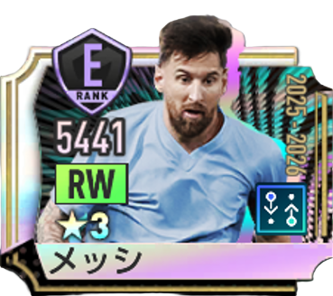
リオネル・メッシ
リアクションポリシーのリセマラ終了ライン
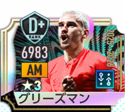
アントワーヌ・グリーズマン
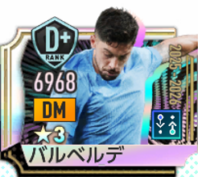
フェデリコ・バルベルデ
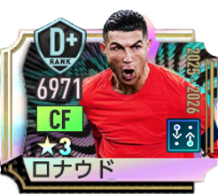
クリスティアーノ・ロナウド
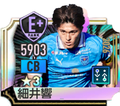
細井響(2026)
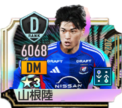
山根陸(2026)
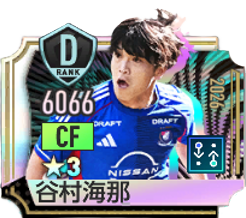
谷村海那(2026)
最終目標は金のフォーメーションコンボ「エンカルナードス'23 / 4-3-3B」です。必須枠はアントワーヌ・グリーズマン。補強枠としてフェデリコ・バルベルデ、細井響(2026)を揃えていきます。
フェデリコ・バルベルデはJリーグSPの山根陸(2026)やサカつくモード内の選手で代用可能。細井響(2026)は★2SPのゼノ・デバストやサカつくモード内の選手でも代用できます。
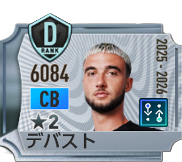
ゼノ・デバスト
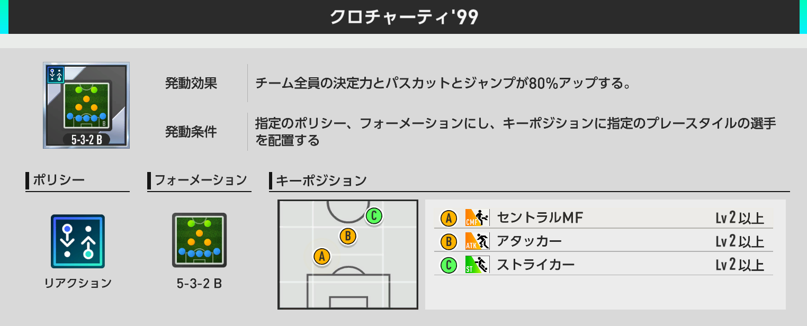
監督Lv10までのつなぎ
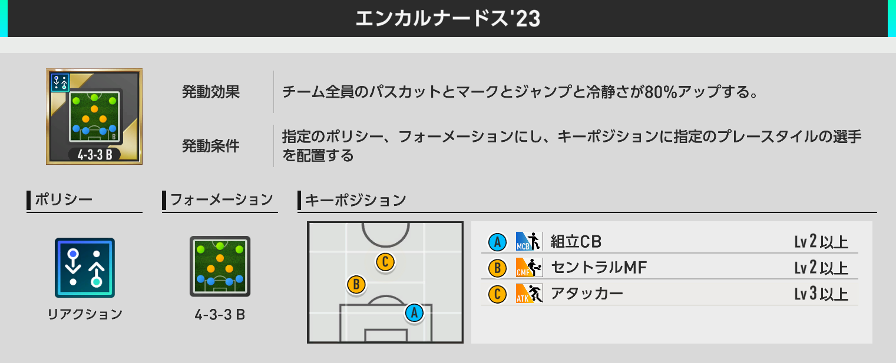
監督Lv10で獲得
クロチャーティ'99は「クリスティアーノ・ロナウド / アントワーヌ・グリーズマン / フェデリコ・バルベルデ」を軸に発動。ロナウドは谷村海那(2026)、バルベルデは山根陸(2026)などで代用できます。
リアクションはカウンターに有利。チュートリアルで獲得できる★3リオネル・メッシも起用しやすく、初心者におすすめのルートです。
ポゼッションポリシーのリセマラ終了ライン
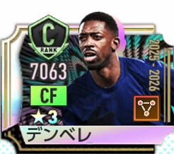
ウスマン・デンベレ
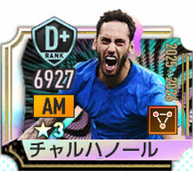
ハカン・チャルハノール
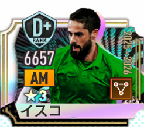
イスコ
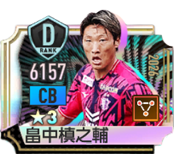
畠中槙之輔(2026)
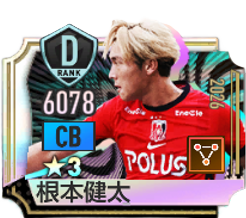
根本健太(2026)
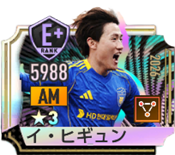
イ・ヒギュン
最終目標は金のフォーメーションコンボ「ブラウ・グラーナ'15 / 4-3-3A」。必須枠はウスマン・デンベレ、補強枠はハカン・チャルハノールと畠中槙之輔(2026)または根本健太(2026)です。
補強枠は、必要なプレースタイルを持つサカつくモード選手でも代用できます。
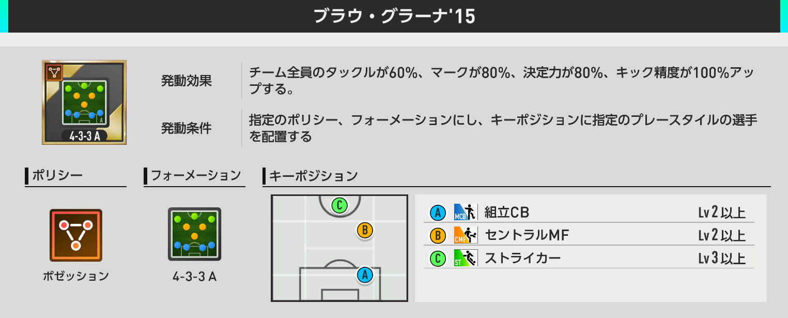
交換所で入手可能
ポゼッションはリアクションに有利。金フォメコンまでのつなぎとして使いやすい銀フォメコンがないため、4コースの中ではやや中級者向けです。
ムービングポリシーのリセマラ終了ライン
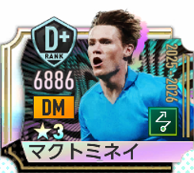
スコット・マクトミネイ
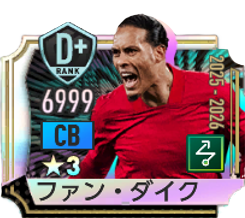
フィルジル・ファン・ダイク
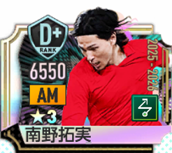
南野拓実
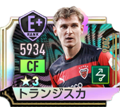
ヤコブ・トランジスカ
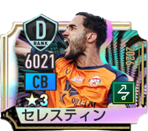
ジュリアン・セレスティン
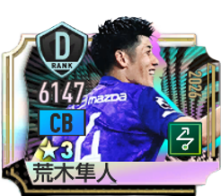
荒木隼人(2026)
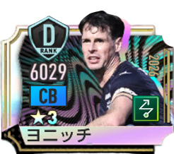
マテイ・ヨニッチ(2026)
最終目標は金のフォーメーションコンボ「カナリア軍団'06 / 4-4-2C」。必須枠はスコット・マクトミネイ、補強枠はストライカーⅡとストッパーⅡの選手です。
ストライカーⅡは★2SPのジェイミー・ヴァーディでも代用可能です。
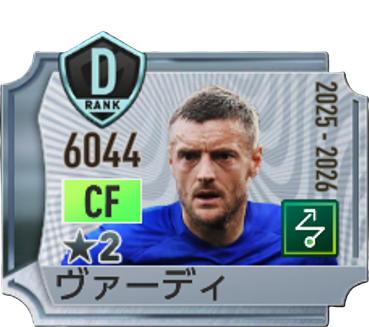
ジェイミー・ヴァーディ
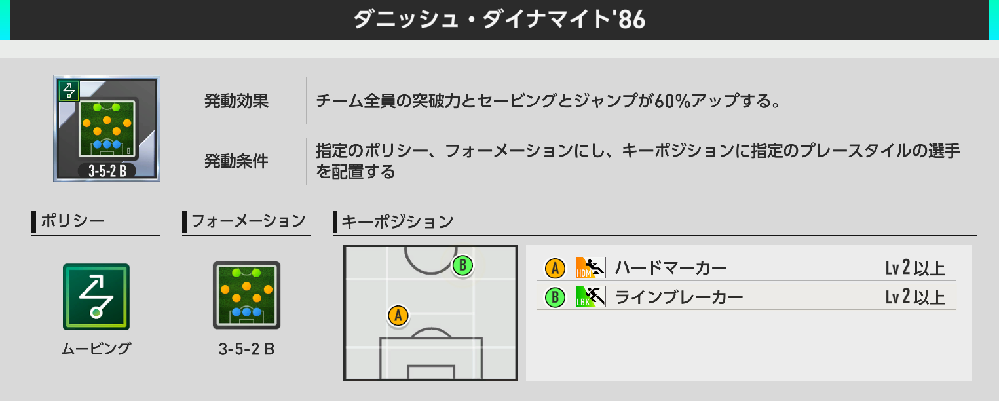
監督Lv10までのつなぎ
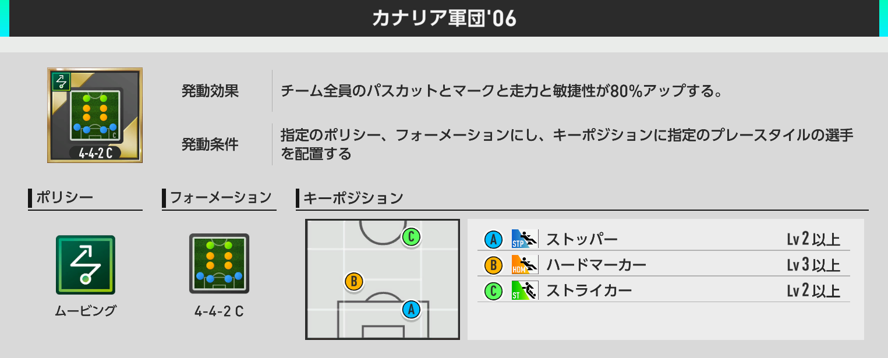
監督Lv10で獲得
ダニッシュ・ダイナマイト'86はスコット・マクトミネイを必須枠に、ラインブレーカーⅡの選手を補強。ラインブレーカーⅡはサカつくモードの選手でOKです。
ムービングはポゼッションに有利。他ポリシーに比べてSP選手に強力なCFやAMが少ないため、序盤の編成難度は高めです。
カウンターポリシーのリセマラ終了ライン
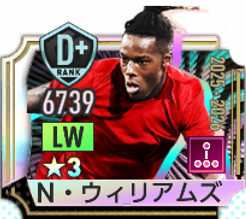
ニコ・ウィリアムズ
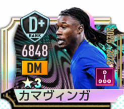
エドゥアルド・カマヴィンガ
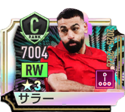
モハメド・サラー
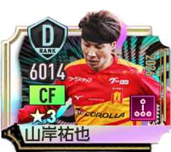
山岸祐也(2026)
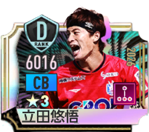
立田悠悟(2026)
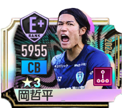
岡哲平(2026)
最終目標は金のフォーメーションコンボ「リーベル'18 / 4-3-3B」。必須枠はニコ・ウィリアムズ。補強枠としてハードマーカーⅡ、RWのドリブラーⅡを揃えます。
ハードマーカーⅡはウィークリーミッションのSP選手引換券で入手できる「透明男」、ドリブラーⅡは「J・ラマンベラ」で代用可能です。
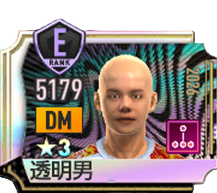
透明男
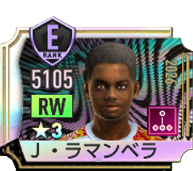
J・ラマンベラ
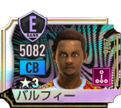
バルフィー
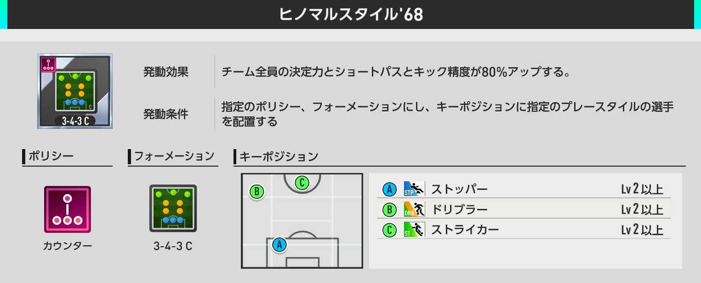
監督Lv10までのつなぎ
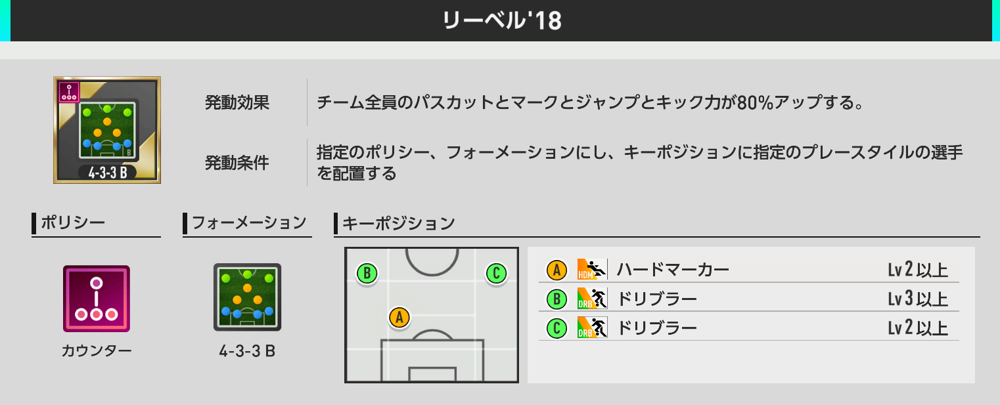
監督Lv10で獲得
ヒノマルスタイル'68はニコ・ウィリアムズを必須枠に、ストライカーⅡ・ストッパーⅡを補強。ストッパーⅡはSP選手引換券のバルフィーで代用できます。
カウンターはムービングに有利。ニコ・ウィリアムズさえ獲得できれば、交換選手を使ってフォーメーションコンボを組みやすいため、リセマラ終了が最も簡単な超初心者向けルートです。
4コースのおすすめ度を比較
| ポリシー | リセマラ終了ライン | 難易度 | 特徴 |
|---|---|---|---|
| リアクション | グリーズマン | 初心者向け | メッシを使いやすく、銀→金フォメコンへ繋げやすい |
| ポゼッション | デンベレ | 中級者向け | 金フォメコンまでのつなぎがやや難しい |
| ムービング | マクトミネイ | 上級者向け | 序盤の攻撃SP選手が少なく編成難度が高め |
| カウンター | ニコ・ウィリアムズ | 超初心者向け | 交換選手で必要プレースタイルを補いやすい |
リセマラは深追いしすぎなくてOK
サカつく2026のリセマラは1周3～5分で回しやすく、アカウントリセットもあるため比較的やりやすいです。ただし、目的の選手が出るまで厳選すると想像以上に時間がかかることがあります。
まずは自分が目指すポリシーの終了ラインを決めつつ、狙いの選手が出ない場合は実際に当たった★3SP選手を軸に編成を考えることも重要です。
リセマラ後に使いたい攻略ツール
当たったSP選手を起点に、その後のフォーメーションコンボや最強構成を調べたい場合は、当サイトのツールを活用してください。